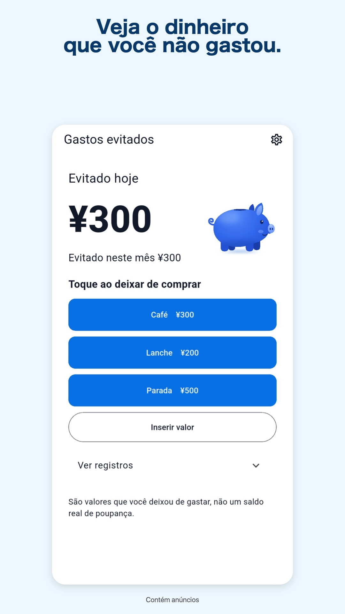

Gastos evitados
Registre compras evitadas e veja os totais de hoje e do mês.
Disponível na App Store para iPhone e no Google Play para Android.



São valores que você deixou de gastar, não um saldo real de poupança.
Salvo no aparelho
Configurações e registros são salvos no aparelho. Dependendo do sistema, podem ser incluídos em backups.